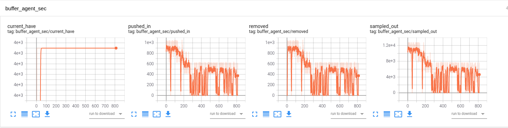
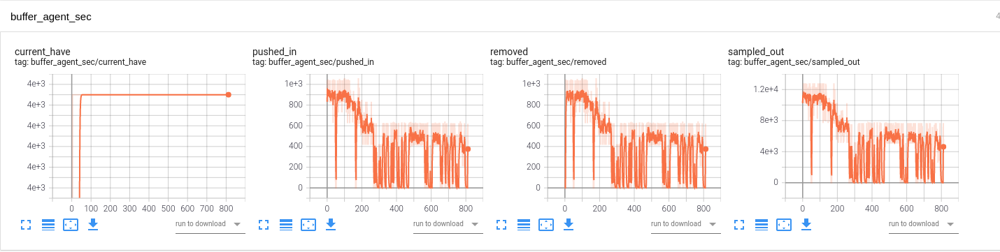
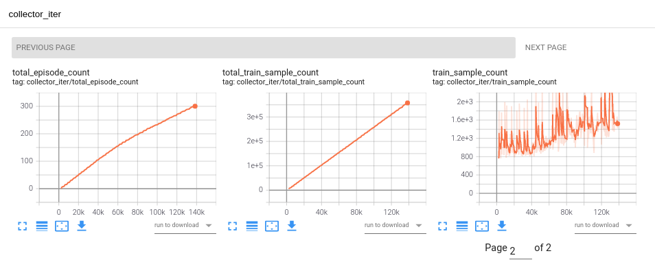
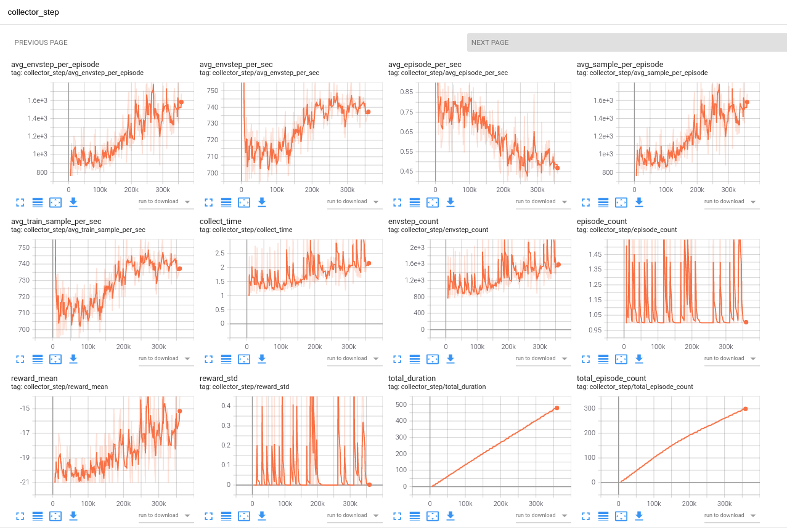
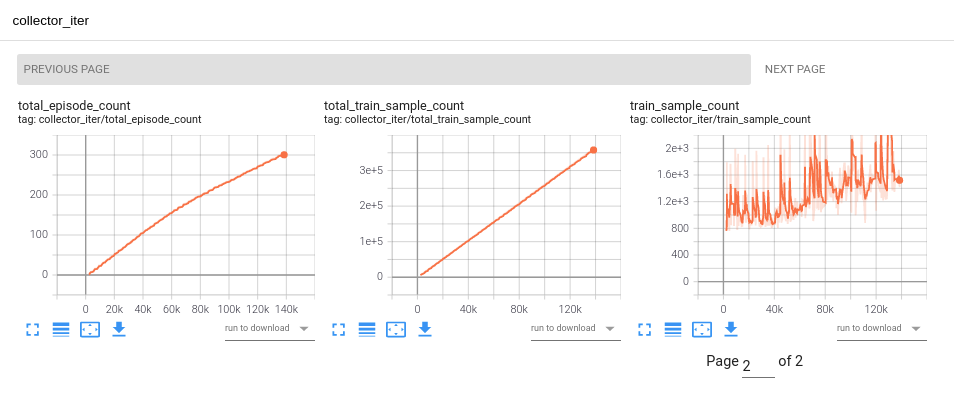
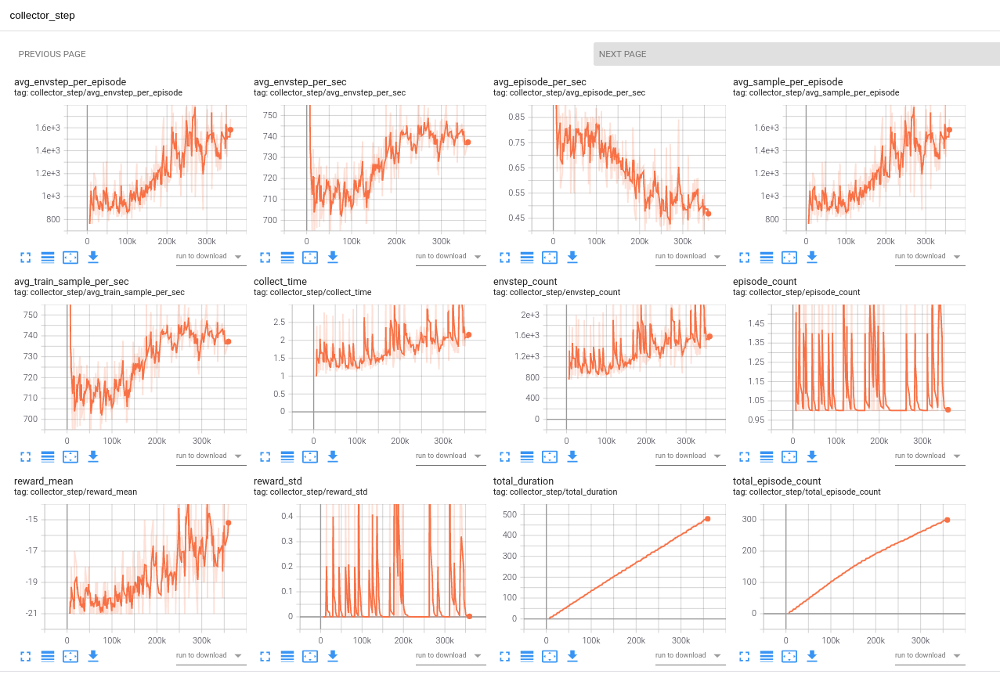
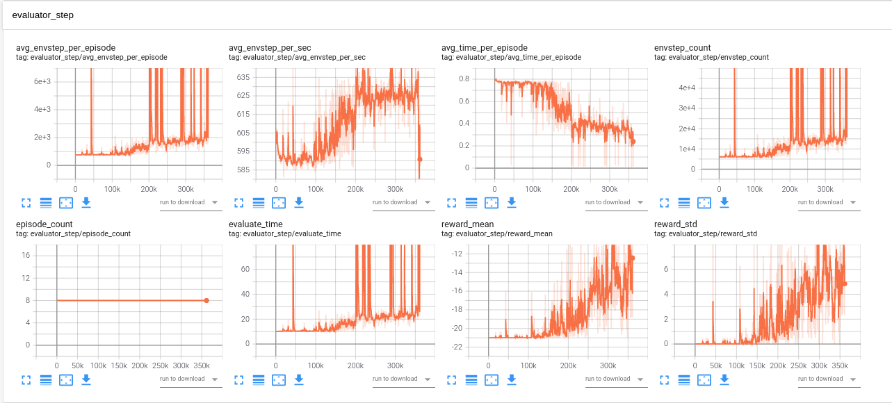
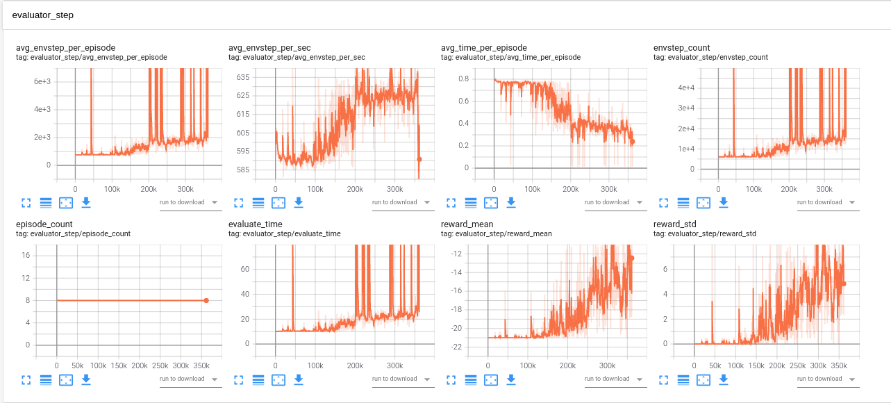
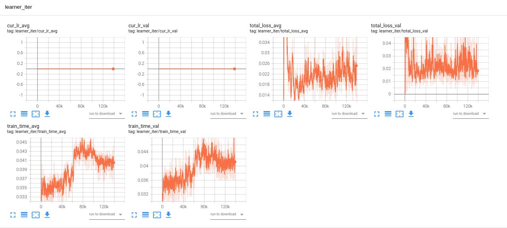

Tensorboard and Logging demo¶
In this page, the default tensorboard and logging information is described in detail.
A CartPole DQN experiment is used as example.
Tensorboard info¶
There are 4 main parts in tensorboard: buffer, collector, learner and evaluator, corresponding to 4 modules. Buffer tensorboard records useful information about sampled data in replay buffer, collector and evaluator tensorboard records interactive information between them and environments, learner tensorboard records parameters during updating models.
The most essential information during training may be the reward of evaluator and collector. they are showed in collector_iter,
collector_step and evaluator_iter, evaluator_step, named reward_mean.
Buffer¶
Buffer tensorboard has 3 recorded horizontal axis quantities: env steps, learner iterations and time. The first two record priority, staleness and use counts of all data, the last records the amount of data and the I/O amount per time period.
If everything works well, the tensorboard will look like below.

 

Collector & Evaluator¶
Collector and evaluator have similar recording information. They have 2 recorded horizontal axis quantities: env steps and learner iterations. They record env steps per episode and per seconds, episodes per second, training samples per episode and per second, each collecting time, amount of env steps and episodes in time period and totally, collected and evaluated reward.
If everything works well, the tensorboard will look like below.
 




 

Learner¶
Learner has 2 recorded horizontal axis quantities: env steps and learner iterations. Learner information may be different due to policy. In short it may records learning rate, training loss, training time, Q value or action values, etc.
If everything works well, the tensorboard will look like below.

Logging info¶
All the above information is recorded in logging files. Each module has a folder named by themselves to save logging files. The showed
Informations printed in shell is similar as above. Generally, replay buffer prints its info every fixed time, collector and learner only print after collection, evaluation and updating models.
An example of logging printed in shell is shown below.